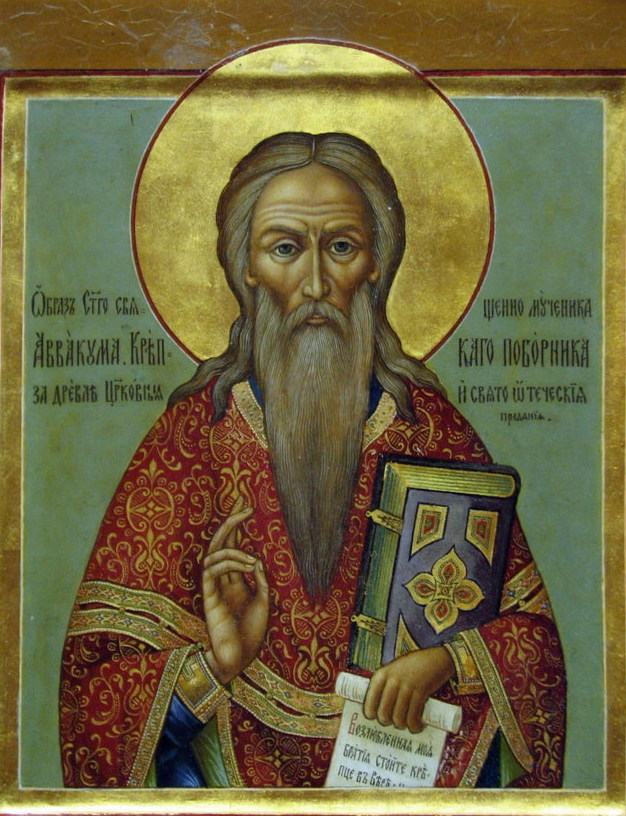

Archpriest Avvakum's Life, written by himself
Features that are not common for hagiography
- Use of profanity блядин сын, например
- Avvakum writes in mixture of OCS and vernacular Russian of the 17th century, for example he write in colloquial language when he refers to his excommunication: "As to my excommunication...I wipe my arse with that" (427, cited in Zenkovsky); Avakuum anticipates Karamzin's argument that you write as you speak, overcoming diglossia of written and spoken language.
- Use of first-person narration
- It is a travelogue, describing local experience (for example, the colonial practice of "amanat") (see Etkind, "Internal Colonization")
Features of hagiography
- Miracles happening in the life of a pious person. For example, 1) "The ice gave a crack beneath me and split up to either side across the whole lake" (432). God helps Avvakum to get some water. 2) Nikon's servants cut out tongues of Old Believers, but Old Believers continued to preach
- Citations from Holy Scriptures
- Avakuum suffers for his faith - in his own eyes, this is what makes him a saint
Schism. On the surface it was an argument about rituals and books between Nikon and Avvakum. In reality it was a political struggle between Old Believers who wanted the Church to be independent from the State and New Believers who viewed the Church as an institution of the State. Church is just a department within the state bureaucracy.
